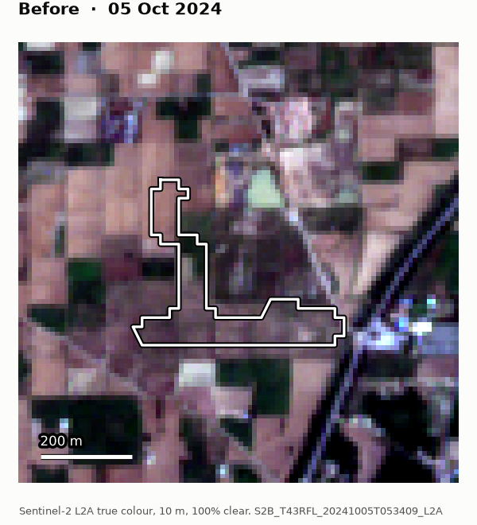
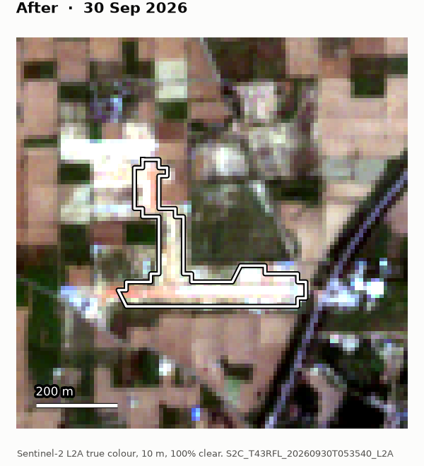
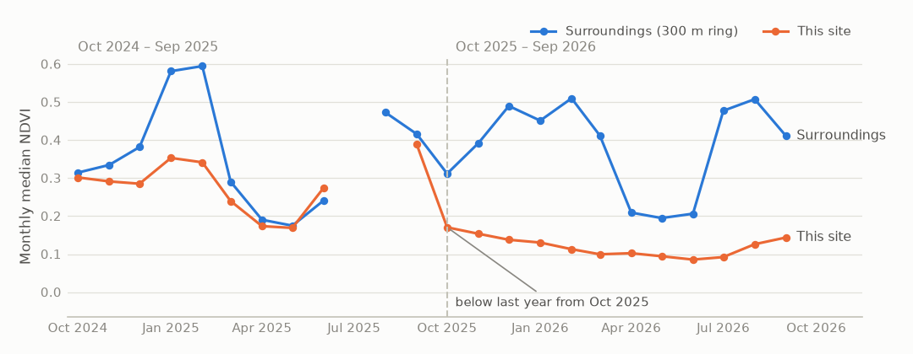

Case NUH-2609-c8b48a
Suspected open-cast stone quarrying · Rawli(91), Ferozepur Jhirka, Nuh, Haryana
already under way by Oct 2025
Before and after


Both images use the same colour stretch. The white outline is the detected area. The change was already under way when Oct 2025 – Sep 2026 began, so the earlier image is the first clear view of Oct 2024 – Sep 2025.
Greenness through both periods

Monthly median NDVI inside the site and in the ring around it. The monsoon and crop calendar move both lines together. Quarrying pulls the site line down and keeps it there. The onset month is the first month the site stays below its level a year earlier, relative to the ring. Gaps are months with no clear view.
Why it is ranked #6
- 5.0 ha newly disturbed (boundary range 3.2–6.8 ha)
- bare ground or open pit in 94% of clear views in Oct 2025 – Sep 2026, vs 33% in Oct 2024 – Sep 2025
- peak greenness (NDVI p90) fell from 0.43 to 0.18
- grows out of ground that was already disturbed
- caution: 100% mapped as cropland in ESA WorldCover 2021, could be a fallow field
- no authorised areas on file
Jurisdiction
| State | Haryana |
|---|---|
| District | Nuh |
| Tehsil | Ferozepur Jhirka |
| Block | Ferozepur Jhirka |
| Village | Rawli(91) |
| Authorisation | no authorised areas on file |
Mining in the Aravalli hills of Nuh has been suspended by Supreme Court order since 8 May 2009. No lease is on file for this site. Verify the current legal position and the khasra on Bhunaksha before acting.
Check on the ground
- Fresh cut rock faces, drill holes or blasting marks
- Excavators, crushers, dumpers, or a haul road leading out of the site
- Stockpiles of stone, gravel or overburden
- Compare the site with the khasra map on Bhunaksha and any lease plan
- Photograph with GPS location and date; note vehicle registration numbers
Evidence trail
| Before image | 2024-10-05, 100% clear over the chipS2B_T43RFL_20241005T053409_L2ASHA-256 of image: 220c3866ceee2b6a004afd4d8f773f7ff61c2983e7315caa695b37bb176d66e9 |
|---|---|
| After image | 2026-09-30, 100% clear over the chipS2C_T43RFL_20260930T053540_L2ASHA-256 of image: 2bdc4d1e8ddaff73acf2918ea277c9f939b678a50065986c79c7f16e4ea558ed |
| Detection | Oct 2024 – Sep 2025 vs Oct 2025 – Sep 2026: share of clear views with bare ground or open pit 33% → 94%; peak NDVI 0.43 → 0.18; about 28 and 32 clear views per pixel |
| Pipeline | sentinel 0.1.0, config 91a370a03f1b, run 2026-11-05 21:53; machine-readable record: evidence.json |
This is a lead from free satellite imagery (Copernicus Sentinel-2), not proof of illegality. Confirm in the field before taking action. Boundaries are from geoBoundaries (ODbL), not an official Survey of India map.